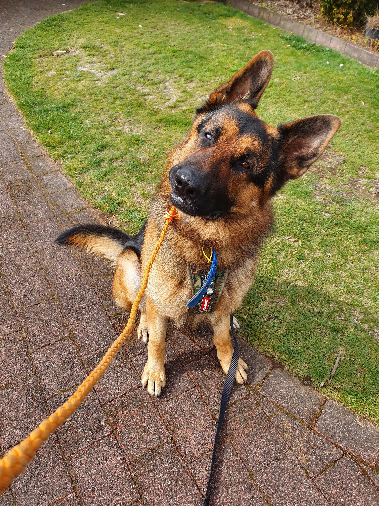
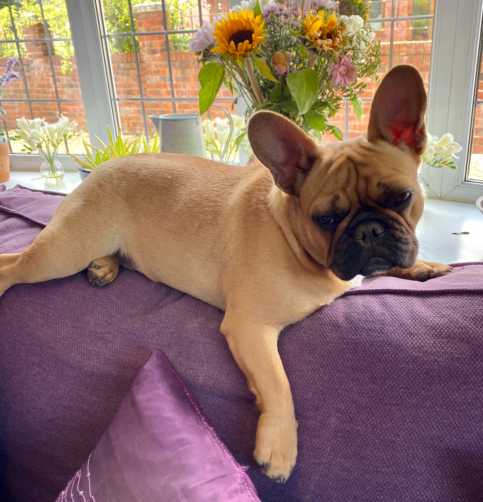
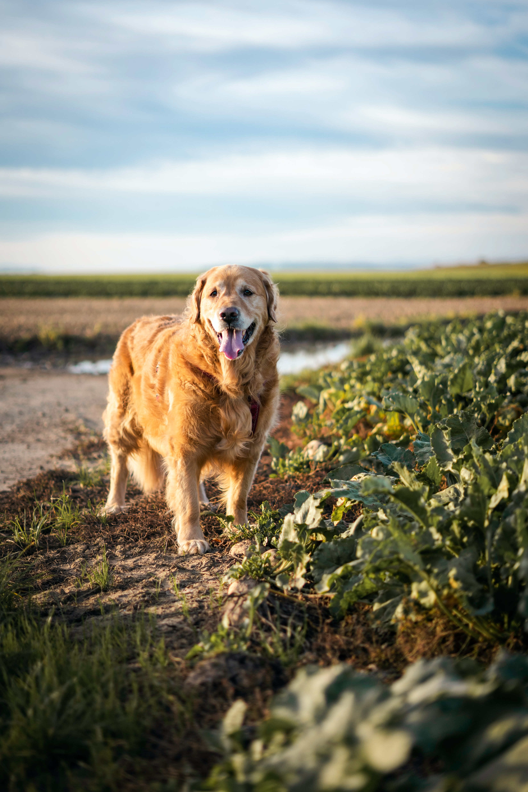

Pet Adoption Service
Meet Your New Friends
| Info | |
|---|---|
 |
Name: Olvia Description:He's a Husky in every way, good on a leash, obedience trained, super loving and sweet, and going to make someone very happy to have him in the family! He would do best in a family with Husky experience. |
 |
Name: Tom Description:The home best for Tom will be one with shepherd experience who knows how to apply structure so that he doesn't get overprotective of his people. He is playful, sweet, and loves her people. However, Tom can love one particular person in a family too much and will try to guard that person from the other members of the family, if allowed. |
|  |
Name: Poncho Description:Poncho's now obedience trained, so much less fearful, so much more trusting, and so responsive with the people who have worked with him. He needs an adopter who can spend time with him, prior to adoption, as he doesn't trust strangers. We will work with you and Poncho- getting you both to the point where he trusts you and can leave with you. He just needs someone who can spend the time to show him structure, boundaries, and work on continuing his socialization, and this boy will have you smiling from ear to ear for years to come. |
|  |
Name: Odin Description:Odin is so handsome and bonds so quickly, it's hard to imagine how he landed at the shelter in the first place. We've found this big boy, who is 4 years old, to be a happy guy who loves water, chasing down balls, is working on his leash skills, has no bad reaction towards other dogs while on leash, and loves going for walks around town. He would like someone with GSD experience to give him structure and, in return, you'll get an amazingly loyal companion who will be your best friend for life. |
|  |
Name: Missy Description:Missy is a sweet girl whos quick to learn and eager to please, but she can be stubborn and will take charge if allowed so she needs a calm, assertive handler who can give her leadership and consistency. She become very good on a leash, has learned some basic commands (heel, halt, sit), and continues to improve her manners and obedience. Missy is almost perfect in every way, but she tends to pick her favorite person in the household |